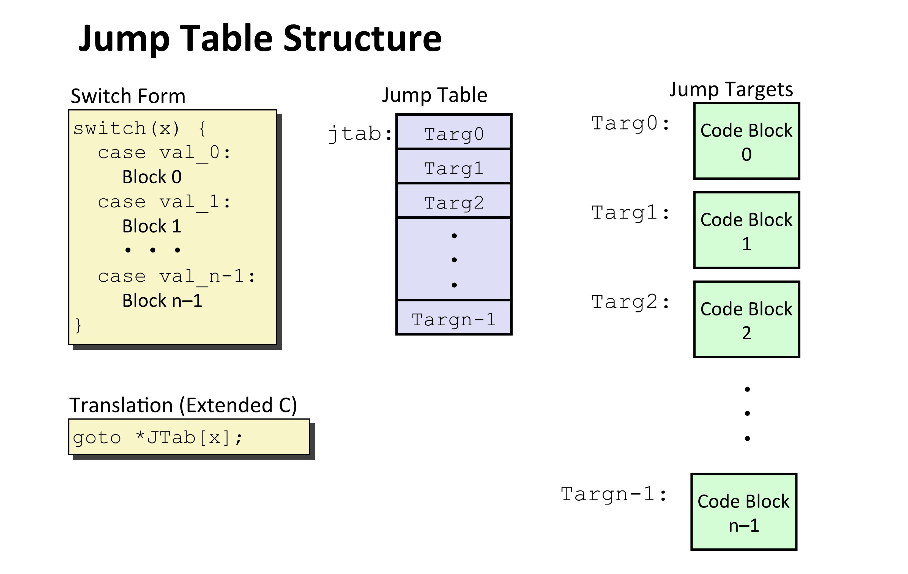

3 、机器级编程：控制
一、条件码

CF：Carry Flag （无符号数）进位ZF：Zero Flag =0SF：Sign Flag（有符号数）<0OF：Overflow Flag（有符号数）补码溢出
1、具体条件
cmpq Src2, Src1
# 计算 Src1 - Src2，反过来的
testq Src2, Src1
# 计算 Src1 & Src2
2、SetX指令集
- 功能：根据条件码的组合，将目标的最低字节设置为0或1，不会改变剩余的7个字节
| SetX 指令 |
条件码 |
描述 |
sete |
ZF |
相等 / 零 |
setne |
~ZF |
不相等 / 非零 |
sets |
SF |
负数 |
setns |
~SF |
非负数 |
setg |
~(SF ^ OF) & ~ZF |
大于（有符号） |
setge |
~(SF ^ OF) |
大于或等于（有符号） |
setl |
(SF ^ OF) |
小于（有符号） |
setle |
(SF ^ OF) |
小于或等于（有符号） |
seta |
~CF & ~ZF |
大于（无符号） |
setb |
CF |
小于（无符号） |
Example
int gt (long x, long y){
return x > y;
}
cmpq %rsi, %rdi # Compare x:y
setg %al # Set when >
movzbl %al, %eax # Zero rest of %rax
ret
| 寄存器 |
用途 |
%rdi |
x |
%rsi |
y |
%rax |
return value |
二、条件分支
1、jX指令集
| jX 指令 |
条件码 |
描述 |
jmp |
1 |
无条件跳转 |
je |
ZF |
相等/零 |
jne |
~ZF |
不相等/非零 |
js |
SF |
负数 |
jns |
~SF |
非负数 |
jg |
~(SF^OF) & ~ZF |
大于（有符号） |
jge |
~(SF^OF) |
大于或等于（有符号） |
jl |
(SF^OF) |
小于（有符号） |
jle |
(SF^OF) |
ZF |
ja |
~CF & ~ZF |
大于（无符号） |
jb |
CF |
小于（无符号） |
Example
long absdiff(long x, long y){
long result;
if (x > y)
result = x-y;
else
result = y-x;
return result;
}
absdiff:
.LFB2:
.cfi_startproc
cmpq %rsi, %rdi # x > y
jle .L4 # Jump to .L4
movq %rdi, %rax
subq %rsi, %rax
ret
.L4: # x <= y
movq %rsi, %rax
subq %rdi, %rax
ret
| 寄存器 |
用途 |
%rdi |
x |
%rsi |
y |
%rax |
return value |
// 用 goto 语句模仿汇编逻辑
// 区分出代码块，根据条件执行相应代码块
long absdiff_j(long x, long y){
long result;
int ntest = x <= y;
if (ntest) goto Else;
result = x-y;
goto Done;
Else:
result = y-x;
Done:
return result;
}
2、条件移动指令
- 思想：计算出所有分支结果，之后选择哪一种来输出（优化算法）
absdiff:
movq %rdi, %rax # x -> %rax
subq %rsi, %rax # %rax（result = x - y）
movq %rsi, %rdx # y -> %rdx
subq %rdi, %rdx # %rdx（eval = y - x）
cmpq %rsi, %rdi # cmp x, y
cmovle %rdx, %rax # 如果 x <= y（即 %rsi <= %rdi），则将 %rdx 的值移动到 %rax（result = eval）
ret
Danger
-
高计算成本：计算了所有分支
-
有风险
val = p ? *p : 0; // 解空指针
-
有副作用
-
val = x > 0 ? x*=7 : x+=3; // 两个值都被计算
三、循环
Tip
原循环翻译成汇编与goto语句翻译成汇编，原语句不同，汇编一致，且逻辑为跳转goto的逻辑
1、do-whlie 循环
loop:
Body
if(Test)
goto loop
Example
long pcount_do(unsigned long x) {
long result = 0;
do {
result += x & 0x1;
x >>= 1;
} while (x);
return result;
}
long pcount_goto_dw(unsigned long x) {
long result = 0;
if (!x)
goto done;
loop:
result += x & 0x1;
x >>= 1;
if (x)
goto loop;
done:
return result;
}
pcount_do:
.LFB12:
.cfi_startproc
movl $0, %eax
.L2:
movq %rdi, %rdx
andl $1, %edx
addq %rdx, %rax
shrq %rdi
jne .L2
rep; ret
.cfi_endproc
.LFE12:
.size pcount_do, .-pcount_do
.globl pcount_goto
.type pcount_goto, @function
pcount_goto:
.LFB13:
.cfi_startproc
movl $0, %eax
.L5:
movq %rdi, %rdx
andl $1, %edx
addq %rdx, %rax
shrq %rdi
jne .L5
rep; ret
pcount_goto_dw:
.LFB15:
.cfi_startproc
movl $0, %eax
testq %rdi, %rdi
je .L11
.L12:
.L13:
movq %rdi, %rdx
andl $1, %edx
addq %rdx, %rax
shrq %rdi
jne .L13
.L11:
rep; ret
2、while 循环
goto test;
loop:
Body
if(Test)
goto loop
done:
Example
long pcount_while(unsigned long x) {
long result = 0;
while (x) {
result += x & 0x1;
x >>= 1;
}
return result;
}
long pcount_goto_jtm(unsigned long x) {
long result = 0;
goto test;
loop:
result += x & 0x1;
x >>= 1;
test:
if (x)
goto loop;
return result;
}
pcount_while:
.LFB14:
.cfi_startproc
movl $0, %eax
jmp .L8
.L9:
movq %rdi, %rdx
andl $1, %edx
addq %rdx, %rax
shrq %rdi
.L8:
testq %rdi, %rdi
jne .L9
rep; ret
pcount_goto_jtm:
.LFB16:
.cfi_startproc
movl $0, %eax
jmp .L17
.L18:
movq %rdi, %rdx
andl $1, %edx
addq %rdx, %rax
shrq %rdi
.L17:
testq %rdi, %rdi
jne .L18
rep; ret
3、for 循环
for (Init; Test; Update)
Body
Example
long pcount_for(unsigned long x) {
size_t i;
long result = 0;
for (i = 0; i < WSIZE; i++) {
unsigned bit = (x >> i) & 0x1;
result += bit;
}
return result;
}
long pcount_for_goto_dw(unsigned long x) {
size_t i;
long result = 0;
i = 0;
if (!(i < WSIZE))
goto done;
loop:
{
unsigned bit = (x >> i) & 0x1;
result += bit;
}
i++;
if (i < WSIZE)
goto loop;
done:
return result;
}
pcount_for:
.LFB17:
.cfi_startproc
movl $0, %eax
movl $0, %ecx
jmp .L20
.L21:
movq %rdi, %rdx
shrq %cl, %rdx
andl $1, %edx
addq %rdx, %rax
addq $1, %rcx
.L20:
cmpq $63, %rcx
jbe .L21
rep; ret
pcount_for_goto_dw:
.LFB18:
.cfi_startproc
movl $0, %eax
movl $0, %ecx
.L23:
movq %rdi, %rdx
shrq %cl, %rdx
andl $1, %edx
addq %rdx, %rax
addq $1, %rcx
cmpq $63, %rcx
jbe .L23
rep; ret
.L24:
.cfi_endproc
.LFE18:
.size pcount_for_goto_dw, .-pcount_for_goto_dw
.globl pcount_for_goto_jtm
.type pcount_for_goto_jtm, @function
pcount_for_goto_jtm:
.LFB19:
.cfi_startproc
movl $0, %eax
movl $0, %ecx
jmp .L27
.L28:
movq %rdi, %rdx
shrq %cl, %rdx
andl $1, %edx
addq %rdx, %rax
addq $1, %rcx
.L27:
cmpq $63, %rcx
jbe .L28
rep; ret
四、Switch语句

1、跳转表
- 降低复杂度，\(O(1)\)，优于一连串
if-else
Example
| 寄存器 |
用途 |
%rdi |
x |
%rsi |
y |
%rdx |
z |
%rax |
return value |
long switch_eg(long x, long y, long z) {
long w = 1;
switch(x) {
case 1:
w = y*z;
break;
case 2:
w = y/z;
/* Fall through */
case 3:
w += z;
break;
case 5:
case 6:
w -= z;
break;
default:
w = 2;
}
return w;
}
switch_eg:
.LFB34:
.cfi_startproc
movq %rdx, %rcx
cmpq $6, %rdi
ja .L8 # ja 用于 unsigned 比较，但如果出现 signed ,被当成很大的正数也会跳转（ signed 应该要用 jg 比较，这里属于trick）
jmp *.L4(,%rdi,8) # goto *JTab[x] ，跳转到由 %rdi 索引的跳转表地址（乘以8是因为指针大小）
.section .rodata
.align 8
.L4:
.quad .L8 # x = 0 default
.quad .L3 # x = 1
.quad .L5 # x = 2
.quad .L9 # x = 3
.quad .L8 # x = 4 default
.quad .L7 # x = 5
.quad .L7 # x = 6
.text
.L3:
movq %rsi, %rax # y
imulq %rdx, %rax # y * z
ret
.L5: # Case 2
movq %rsi, %rax
cqto
idivq %rcx
jmp .L6 # goto merge
.L9:
movl $1, %eax # w = 1
.L6: # merge
addq %rcx, %rax # w += z
ret
.L7:
movl $1, %eax
subq %rdx, %rax
ret
.L8:
movl $2, %eax
ret
{kind=link}